건설기계설비기사 (2011-06-12 기출문제)
1과목: 재료역학
1. 그림과 같이 길이 100cm의 외팔보에 2개의 집중하중이 작용할 때 C점에서의 굽힘모멘트는 몇 Nㆍm 인가?
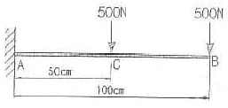
- 250
- 500
- 750
- 1000
(정답률: 알수없음)

2. 그림에서 A는 고압 증기 터빈, B는 저압 증기 터빈이고 내경 60cm, 외경 65cm인 파이프로 연결되어 있다. 20℃에서 연결하고 운전 중 300℃ 증기가 중공축 내에 흐른다. 이 때 파이프에 발생하는 평균 열응력은 약 몇 MPa 인가? (단, E = 200GPa, α=1.2×10-5/℃, A, B는 이동되지 않음)
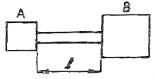
- 2⑤
- 230
- 354
- 672
(정답률: 10%)
3. 그림과 같이 길이 2ℓ인 보에 균일분포 하중 ω가 작용할 때 중앙 지지점을 δ만큼 낮추면 중앙점에서의 반력은? (단, 보의 굽힘강성 EI 는 일정하다.)
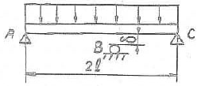
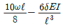
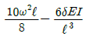
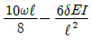
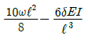
(정답률: 0%)
4. 보의 자중을 무시할 때 그림과 같이 자유단 C에 집중하중 P가 작용할 때 B점에서 처짐 곡선의 기울기각 θ을 탄성계수 E, 단면 2차모멘트 I로 나타내면?
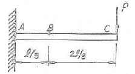
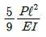
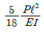
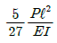
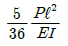
(정답률: 9%)
5. 원형 단면의 길이 2m인 잠주가 양단 회전으로 지지되고 25kN의 압축하중을 받을 때 좌굴에 대한 안전계수를 5로 하면 기둥의 직경은 몇 cm로 해야 되겠는 가? (단, Euler 공식을 적용하고, 탄성계수는 10 GPa이다.)
- 10.08
- 8.08
- 12.08
- 14.08
(정답률: 알수없음)
6. 다음 그림에서 A지점의 반력 RA 는?
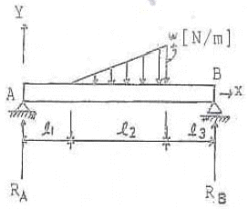
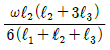
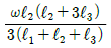
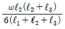
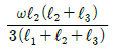
(정답률: 알수없음)
7. 길이가 L이고 반경 r0인 원통형의 나사를 끼워 넣을 때 나사의 단위 길이 당 t0의 토크가 필요하다. 나사 재질의 전단 탄성계수가 G일 때 나사 끝단 간의 비틀림 회전량은 얼마인가?
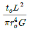
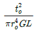
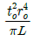
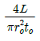
(정답률: 28%)
8. 지름 D = 3 cm의 환봉이 P = 25kN의 전단하중을 받아서 0.00075의 전단 변형률을 발생시켰다. 이 때 재료의 전단탄성계수는 약 몇 GPa 인가?
- 87.7
- 97.7
- 47.2
- 57.2
(정답률: 28%)
9. 폭이 2cm이고 높이가 3cm인 단면을 가진 길이 50cm의 외팔보의 고정단에서 40cm 되는 곳에 800N의 집중하중을 작용시킬 때 자유단의 처짐은 약 몇 mm 인가? (단, 탄성계수는 E = 2.1×107 N/cm2이다.)
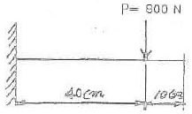
- 5.5
- 4.5
- 3.5
- 2.5
(정답률: 19%)
10. 원형 단면에 전단력 V가 그림과 같이 작용할 때 원주상에 작용하는 전단응력이 0 이 되는 지점은?
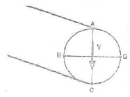
- A, B
- A, B, C, D
- A, C
- B, D
(정답률: 24%)
11. 폭 90mm, 두께 18mm 강판에 세로(종) 방향으로 50kN 전단력이 작용할 때, 전단 탄성계수가 G =80GPa이면 전단 변형률은?
- 1.9×10-4
- 2.6×10-4
- 3.8×10-4
- 4.8×10-4
(정답률: 17%)
12. 바깥지름 40cm, 안지름 20cm의 속이 빈 축은 동일한 단면적을 가지며 같은 재질의 원형축에 비하여 약 몇 배의 비틀림 모멘트에 견딜 수 있는가?
- 0.9배
- 1.2배
- 1.4배
- 1.6배
(정답률: 20%)
13. 지름 3cm인 강축이 회전수 1590rpm으로 26.5kW의 동력을 전달하고 있다. 이 축에 발생하는 최대 전단응력은 약 몇 MPa 인가?
- 30
- 40
- 50
- 60
(정답률: 알수없음)
14. 평면 응력상태의 한 요소에 σx> = 100MPa, σy = 50MPa, τxy = 0을 받는 평판에서 평면 내에서 발생하는 최대 전단응력은 몇 MPa 인가?
- 25
- 50
- 75
- 0
(정답률: 20%)
15. 그림과 같이 W = 200N의 강구가 판 사이에 끼여 있을 때, 접촉점 A에서의 반력 RA는 약 몇 N 인가?(단, 접촉점에서의 마찰은 무시한다.)
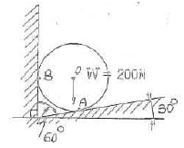
- 231
- 323
- 415
- 502
(정답률: 10%)
16. 그림과 같은 단면의 중립축에 대한 단면 2차모멘트는?
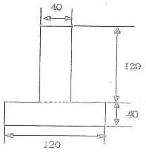
- 21.76 × 106 mm4
- 35.76 × 106 mm4
- 217.6 × 106 mm4
- 357.6 × 106 mm4
(정답률: 10%)
17. 그림과 같은 외팔보에서 허용 굽힘응력 σa= 50kN/cm2 이라 할 때, 최대 하중 P는 약 몇 kN 인가?(단, 보의 단면은 10cm × 10 cm이다.)
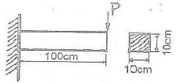
- 110.5
- 100.0
- 95.6
- 83.3
(정답률: 8%)
18. 그림과 같은 단붙이 봉에 인장하중 P가 작용할 때, 축의 지름은 d1 : d2 = 3 : 2 로 하면 d1 부분에 발생하는 응력 σ1과 d2 부분에 발생하는 응력 σ2의 비는?
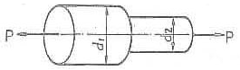
- σ1 : σ2 = 3 : 2
- σ1 : σ2 = 2 : 3
- σ1 : σ2 = 9 : 4
- σ1 : σ2 = 4 : 9
(정답률: 25%)
19. 반경 r, 압력 P, 두께 t인 실린더형 압력용기에서 발생되는 절대 최대 전단응력(3차원 응력상태에서의 최대 전단응력)의 크기는?
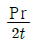
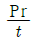
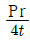
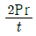
(정답률: 0%)
20. 다음 그림에서 2kN의 힘을 전달하는 키(15 × 10× 60mm)가 있다. 이 키(Key)에 생기는 전단응력은 몇 MPa 인가?
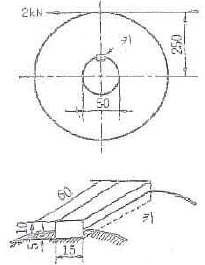
- 66.7
- 44.4
- 22.2
- 12.3
(정답률: 0%)
2과목: 기계열역학
21. 어떤 기체가 5 kJ의 열을 받고 0.18 kN ㆍ m의 일을 하였다. 이때의 내부에너지의 변화량은?
- 3.24 kJ
- 4.82 kJ
- 5.18 kJ
- 6.14 kJ
(정답률: 알수없음)
22. 다음 중 냉동기의 성능계수를 높이는 것으로 틀린것은?
- 증발기의 온도를 높인다.
- 증발기의 온도를 낮춘다.
- 압축기의 효율을 높인다.
- 증발기와 응축기에서 마찰압력손실을 줄인다.
(정답률: 알수없음)
23. 공기가 등온과정을 통해 압력이 200kPa, 비체적이 0.02 m3/kg인 상태에서 압력이 100 kPa인 상태로 팽창하였다. 공기를 이상기체로 가정할 때 시스템이 이 과정에서 한 단위 질량 당 일은 약 얼마인가?
- 1.4 kJ/kg
- 2.0 kJ/kg
- 2.8 kJ/kg
- 8.0 kJ/kg
(정답률: 알수없음)
24. T-S선도에서 어느 가역 상태변화를 표시하는 곡선과 S축 사이의 면적은 무엇을 표시하는가?
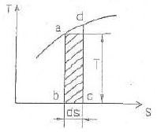
- 힘
- 열량
- 압력
- 비체적
(정답률: 28%)
25. 브레이턴 사이클(Braytom Cycle)은 다음 무슨 사이클에 가장 가까운가?
- 정적연소사이클
- 정압연소사이클
- 등온연소사이클
- 합성연소사이클
(정답률: 알수없음)
26. 압력이 일정할 때 공기 5 kg을 0℃에서 100℃까지 가열하는데 필요한 열량은 약 몇 kJ 인가?(단, 공기비열 Cp(kJ/kgㆍ℃) = 1.01+0.000079t(℃) 이다.)
- 102
- 476
- 490
- 507
(정답률: 알수없음)
27. 10℃에서 160℃까지의 평균 정적비열은 0.7315 kJ/kg℃이다. 이 온도변화에서 공기 1kg의 내부에너지 변화는?
- 109.7 kJ
- 120.6 kJ
- 107.1 kJ
- 121.7 kJ
(정답률: 알수없음)
28. 비열이 0.475 kJ/kgㆍK인 철 10kg을 20℃에서 80℃로 올리는데 필요한 열량은 몇 kJ인가?
- 222
- 232
- 285
- 315
(정답률: 25%)
29. 피스톤-실린더로 구성된 용기 안에 들어 있는 100kPa, 20℃ 상태의 질소 기체를 가역 단열압축하여 압력이 500 kPa 이 되었다. 질소의 정적 비열은 0.745 kJ/kgㆍK 이고, 비열비는 1.4이다. 질소 1kg당 필요한 압축일은 약 얼마인가?
- 102.7 kJ/kg
- 127.5 kJ/kg
- 171.8 kJ/kg
- 240.5 kJ/kg
(정답률: 19%)
30. 0.5 MPa, 375℃의 수증기의 정압 비열(kJ/kgㆍK)은? (단, 0.5 MPa, 350℃에서 엔탈피 h=31647.7kJ/kgㆍK이고, 0.5MPa, 400℃에서 엔탈피 h=3271.9 kJ/kgㆍK이다. 수증기는 이상기체로 가정한다.)
- 1.042
- 2.084
- 4.168
- 8.742
(정답률: 알수없음)
31. 어떤 냉동사이클의 T-s 선도에 대한 설명으로 틀린 것은?
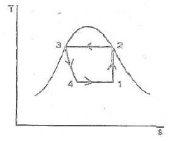
- 1-2 과정 : 가열단열압축
- 2-3 과정 : 등온흡열
- 3-4 과정 : 교축과정
- 4-1 과정 : 증발기에서 과정
(정답률: 알수없음)
32. 열역학 제2법칙은 여러 가지로 서술될 수 있다. 열역학 제2법칙에 대한 설명 중 잘못된 것은?
- 열을 일로 변환하는 것은 불가능하다.
- 열효율이 100%인 열기관을 만들 수 없다.
- 열은 저온 물체로부터 고온 물체로 자연적으로 전달되지 않는다.
- 입력되는 일 없이 작동하는 냉동기를 만들 수 없다.
(정답률: 알수없음)
33. 용기 안에 있는 유체의 초기 내부에너지는 700 kJ이다. 냉각과정 동안 250 kJ의 열을 잃고, 용기 내에 설치된 회전날개로 유체에 100 kJ의 일을 한다. 최종상태의 유체의 내부에너지는 얼마인가?
- 350 kJ
- 450 kJ
- 550 kJ
- 650 kJ
(정답률: 15%)
34. 순수 물질이 기체-액체의 평형상태(포화 상태)에 있다. 다음 설명 중 일반적으로 성립하지 않는 것은?
- 각 상의 온도가 같다.
- 각 상의 압력이 같다.
- 각 상의 비체적이 다르다.
- 각 상의 엔탈피가 같다.
(정답률: 알수없음)
35. 다음 중 이상기체의 교축(스로틀)과정에 대한 사항으로서 틀린 것은?
- 엔탈피 변화가 없다.
- 온도의 변화가 없다.
- 엔트로피의 변화가 없다.
- 비가역 단열과정이다.
(정답률: 알수없음)
36. 용기에 부착된 차압계로 읽은 압력이 150 kPa이고 기압계로 읽은 대기압이 100 kPa이다. 용기 안의 절대압력은?
- 250 kPa
- 150 kPa
- 100 kPa
- 50 kPa
(정답률: 25%)
37. 압축비가 7.5 이고, 비열비 k = 1.4 인 오토(otto)사이클의 열효율은?
- 48.7%
- 51.2%
- 55.3%
- 57.6%
(정답률: 알수없음)
38. 대형 Brayton 사이클 가스 터빈 동력 발전소의 압축기 입구에서 온도가 300K, 압력은 100kPa이고 압축기 압력비는 10:1이다. 공기의 비열은 1.004 kJ/kgK, 비열비는 1.400 이다. 압축기 일은 약 얼마인가?
- 280.3 kJ/kg
- 299.7 kJ/kg
- 350.1 kJ/kg
- 370.5 kJ/kg
(정답률: 알수없음)
39. 폴리트로픽 변화의 관계식 “PVn=일정”에 있어서 n이 무한대로 되면 어느 과정이 되는가?
- 정압과정
- 등온과정
- 정적과정
- 단열과정
(정답률: 10%)
40. -10℃와 30℃ 사이에서 작동되는 냉동기의 최대 성능계수로 적합한 것은?
- 8.8
- 6.6
- 3.3
- 13.2
(정답률: 알수없음)
3과목: 기계유체역학
41. 다음 중 관내 유동에서 마찰계수 또는 Darcy 마찰 계수라고 불리는 무차원량을 표현한 식은?
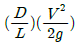
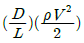
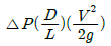
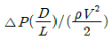
(정답률: 16%)
42. 그림과 같은 관로에 물이 흐를 때 관로 ACD와 관로 ABD 사이에서 발생하는 손실수두는?
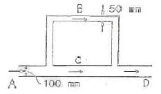
- 관로 ACD와 ABD사이에서 생기는 수두손실은 같다.
- ACD에서 생기는 수두손실이 ABD에서 보다 2배 크다.
- ACD에서 생기는 수두손실이 ABD에서 보다 4배 크다.
- ABD에서 생기는 수두손실이 ACD에서 보다 2배 크다.
(정답률: 22%)
43. 지름이 0.1m 인 매우 긴 관의 중앙 부분에서 점성계수 0.001 Nㆍs/m2, 밀도 1000 kg/m3인 물이 0.1m/s의 속도로 흐를 때 이 부분에서의 유동과 관련하여 맞는 것은?
- 층류 유동
- 난류 유동
- 천이 유동
- 위 조건으로는 알 수 없다.
(정답률: 19%)
44. 그림과 같은 수조에서 파이프를 통하여 흐르는 유량(Q)은 약 몇 m3/s인가? (단, 마찰손실 무시)
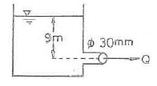
- 9.39×10-3
- 1.25×10-4
- 0.939
- 0.125
(정답률: 28%)
45. 1/10로 축소한 수력 발전 댐과 역학적으로 상사한 실제댐이 생성할 수 있는 동력의 비는?
- 1 : 3160
- 1: 316
- 1 : 31.6
- 1: 3.16
(정답률: 17%)
46. 유선(stream line)에 대한 설명으로 옳은 것은?
- 유체입자의 운동 경로를 유선이라 한다.
- 유동장에서 속도벡터의 방향과 일치하도록 그려진 연속적인 선이다.
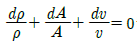
는 유선의 방정식이다.- 항상 [유선=유적선=유맥선]인 관계가 성립한다.
(정답률: 17%)
47. 지름이 5 cm이고 내압이 100 Pa (계기압력)일 때, 비눗방울의 표면장력은 몇 N/m 인가?
- 2.50
- 1.25
- 0.625
- 0.25
(정답률: 17%)
48. 동점성계수가 1×10-6 m2/s인 유체가 지름 2 cm의 원관 속을 흐르고 있다. 원관 내 유체의 평균속도가 5cm/s라면 마찰계수는 얼마인가?
- 0.064
- 0.64
- 0.032
- 0.32
(정답률: 알수없음)
49. 다음 중 포텐셜 유동 이론을 적용시킬 수 있는 경우는 어느 것인가?
- 비회전 유동
- 포아제(Poiseuille) 유동
- 경계층 유동
- 점성 유동
(정답률: 알수없음)
50. 경계층 내의 속도분포가
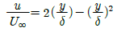
으로 주어졌을 때 경계층의 배제두께(δ1)와 경계층 두께(δ)의 관계로 올바른 것은?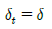
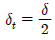
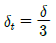
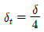
(정답률: 알수없음)
51. 출력이 450kW인 터빈을 통과하는 물이 초당 0.6m3이다. 이 때 터빈의 수두는 약 몇 m 인가?(단, 터빈의 효율을 87%이다.)
- 88
- 78
- 67
- 11
(정답률: 알수없음)
52. 물속에 피토관을 삽입하여 압력을 측정하였더니 정체압이 128kPa, 정압이 120kPa이었다. 이 위치에서의 유속은 몇 m/s 인가?(단, 물의 밀도는 1000kg/m3 이다.)
- 1
- 2
- 4
- 8
(정답률: 20%)
53. 어떤 물체의 속도가 원래속도의 2배가 되었을 때 항력계수가 1/2로 줄었다면 이 물체가 받는 저항은 원래 저항의 몇 배인가?
- 1/2 배
- 4 배
- 1.414 배
- 2 배
(정답률: 알수없음)
54. 물속에서 체적이 0.02m3인 물체의 무게를 측정하였을 때 120N이었다. 이 물체의 공기 중에서의 무게는 몇 N인가?
- 120
- 196
- 294
- 316
(정답률: 알수없음)
55. 지름이 각각 10cm와 20cm인 관이 서로 연결되어있다. 비압축성 유등이라 가정하면 20cm 관속의 평균 유속 2.4m/s일 때 10cm 관내의 평균속도는 약 몇 m/s 인가?
- 0.96
- 9.6
- 0.7
- 7.2
(정답률: 알수없음)
56. 액체 속에 잠겨진 곡면에 작용하는 액체의 압력에 의한 수평력은 어느 것과 같은가?
- 곡면에 작용하는 힘과 같다.
- 곡면의 상부에 채워진 유체의 무게와 같다.
- 곡면을 수직 평판에 투상시켰을 때 생기는 투상면에 작용하는 힘과 같다.
- 곡면을 수평 평판에 투상시켰을 때 생기는 투상면에 작용하는 힘과 같다.
(정답률: 알수없음)
57. 바닷속 100m까지 잠수한 잠수함이 받는 게이지 압력은 몇 kPa 인가?(단, 바닷물의 비중은 1.03 이다.)
- 101
- 404
- 1010
- 4040
(정답률: 30%)
58. 그림의 날개가 제트의 방향을 180° 바꾼다고 했을 때, 제트에 의해서 날개에 작용하는 힘의 크기는 약 몇 N인가?(단, 마찰은 무시한다.)
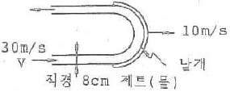
- 2010
- 4020
- 8040
- 6200
(정답률: 28%)
59. 점성계수가 0.2kg/mㆍs인 유체가 지면과 수평으로 놓인 평판 위를 흐른다. 평판 근방의 속도분포가 u=4.0-100(0.2-y)2일 때 평판면에서의 전단응력은 얼마인가?(단, y[m]는 평판면에 수직방향의 좌표이고, u[m/s]는 평판 근방에서 유체가 흐는 방향의 속도이다.)
- 복원중
- 복원중
- 복원중
- 복원중
(정답률: 알수없음)
60. 다음 중 유체를 연속체(continuum)로 보기가 가장 어려운 경우는?
- 대동맥 내 혈액
- 매우 높은 고도에서의 대기층
- 헬리콥터 날개 주위의 공기
- 자동차 라디에이터 내 냉각수
(정답률: 9%)
4과목: 유체기계 및 유압기기
61. 가솔린기관의 성능시험에서 출력이 7.8kW 일 때 연료 소비량이 2.55kg/h이라면 제동 열효율은? (단, 가솔린의 저위발열량은 44000kJ/kg이다.)
- 21%
- 25%
- 31%
- 40%
(정답률: 알수없음)
62. 기관에 사용하는 윤활유에 대한 설명으로 틀린 것은?
- 점도지수가 클수록 온도변화에 대한 점도의 변화가 크다.
- 윤활유는 윤활작용, 기밀작용, 냉각작용, 청정작용 등을 아울러 한다.
- 동절기에는 저점도 윤활유를, 하절기에는 고점도 윤활유를 사용한다.
- 윤활유가 연소실에 들어가 연소되면 일반적으로 배기색이 백색을 띄게 된다.
(정답률: 알수없음)
63. 가솔린기관에 비해 디젤기관에서 주로 과급기를 이용하는 원인이 아닌 것은?
- 디젤기관은 가솔린기관에 비해 과급 시 노크가 적다.
- 디젤기관은 각 사이클마다의 공기흡입량이 일정하지 않아 과급기로 급기량을 증대시킬 필요가 있다.
- 디젤기관이 가솔린기관보다 연비가 좋아지는 범위가 넓다.
- 디젤기관이 출력을 높이기 위해 과급기 사용의 필요성이 높다.
(정답률: 40%)
64. 내연기관의 효율을 향상시키는 방법으로 틀린 것은?
- 압축비를 높인다.
- 배기가스의 온도를 높인다.
- 열손실을 줄인다.
- 흡입저항과 배기가스의 압력을 감소시킨다.
(정답률: 60%)
65. 그림은 연료 소비량과 축 회전수와 관계를 나타내고 있다. a, b, c, 3곡선 중에서 일반적인 기준으로 압축비가 가장 높다고 볼 수 있는 것은?
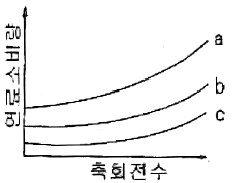
- a
- b
- c
- a, b, c 모두 동일
(정답률: 알수없음)
66. 연소실 내에서 온도가 다른 곳 보다 더 높은 온도에 도달하는 곳은?
- 피스톤 링 부
- 피스톤 헤드
- 배기밸브
- 실린더 벽
(정답률: 30%)
67. 피스톤링의 역할이 아닌 것은?
- 기밀유지
- 열전달
- 측압지지
- 오일제어
(정답률: 50%)
68. 일정 압력하에서 비체적 3m3/kg, 압력 5MPa인 기체를 비체적 5m3/kg로 팽창시켰을 때 이 기체 2kg이 외부에 대하여 한 일은 몇 kJ 인가?
- 20000kJ
- 17500kJ
- 15000kJ
- 13800kJ
(정답률: 67%)
69. 디젤연료의 구비조건이 아닌 것은?
- 착화성이 좋을 것
- 불순물 함유가 없을 것
- 세탄가가 높을 것
- 유황 성분이 많을 것
(정답률: 알수없음)
70. 가솔린기관에서 피스톤의 평균속도가 10m/s이고, 행정이 250mm 일 경우 이 기관의 회전수는?
- 2500rpm
- 1800rpm
- 1600rpm
- 1200rpm
(정답률: 알수없음)
71. 그림과 같은 유압기호가 나타내는 명칭은?
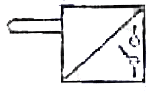
- 리밋 스위치
- 전자 변환기
- 압력 스위치
- 아날로그 변환기
(정답률: 50%)
72. 공기압 장치와 비교하여 유압장치의 일반적인 특징에 대한 설명 중 틀린 것은?
- 작은 장치로 큰 힘을 얻을 수 있다.
- 입력에 대한 출력의 응답이 빠르다.
- 인화에 따른 폭발의 위험이 적다.
- 방청과 윤활이 자동적으로 이루어진다.
(정답률: 70%)
73. 다음 중 실린더에 배압이 걸리므로 끌어당기는 힘이 작용해도 자주(自走)할 염려가 없어서 밀링이나 보링머신 등에 사용하는 회로는?
- 싱크로나이즈 회로
- 어큐뮬레이터 회로
- 미터 인 회로
- 미터 아웃 회로
(정답률: 알수없음)
74. 유압 회로에서 파이프 내에 발생하는 에너지 손실을 줄일 수 있는 방법이 아닌 것은?
- 관의 길이를 길게 한다.
- 관 내부의 표면을 매끄럽게 한다.
- 작동유의 흐름 속도를 줄인다.
- 관의 지름을 크게 한다.
(정답률: 64%)
75. 밸브 몸체의 위치에 대한 용어 중 조작력이 작용하지 않는 때의 밸브 몸체의 위치를 나타내는 용어는?
- 초기 위치
- 과도 위치
- 노멀 위치
- 플로트 위치
(정답률: 알수없음)
76. 열 교환기에서 유온을 항상 적당한 온도로 유지하기 위하여 사용되는 오일클러(oil cooler) 중 수냉식의 특징 설명으로 틀린 것은?
- 증류로는 흡입형과 토출형이 있다.
- 소형으로 냉각 능력이 크다.
- 10℃ 전후의 온도가 낮은 물이 사용될 수 있어야한다.
- 기름 중에 물이 혼입할 우려가 있다.
(정답률: 39%)
77. 어큐뮬레이터의 종류 중 피스톤 형의 특징에 해당하지 않는 것은?
- 형상이 간단하고 구성품이 적다.
- 대형도 제작이 용이하다.
- 축유량을 크게 잡을 수 있다.
- 유실에 가스 침입의 우려가 없다.
(정답률: 59%)
78. 일정한 유량(Q) 및 유속(V)으로 유체가 흐르고 있는 관의 지름 D를 5D로 크게 하면 유속은 어떻게 변화하는가?
- 1/5V로 줄어든다.
- 25V로 늘어난다.
- 5V 로 늘어난다.
- 1/25V로 줄어든다.
(정답률: 알수없음)
79. 토출압력이 6.86 MPa, 토출량은 4.5×104 cm3/min, 회전수가 1000 rpm인 유압 펌프의 소비 동력이 7.5kW일 때, 펌프의 전효율은 약 몇 % 인가?
- 58
- 69
- 78
- 89
(정답률: 47%)
80. 유압모터의 종류가 아닌 것은?
- 기어 모터
- 베인 모터
- 회전피스톤 모터
- 나사모터
(정답률: 알수없음)
5과목: 건설기계일반 및 플랜트배관
81. 노즈 반지름이 있는 바이트로 선삭 할 때 가공 면의 이론적 표면 거칠기를 나타내는 식은? (단, f는 이송, R은 공구의 날 끝 반지름이다.)
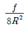
(정답률: 알수없음)
82. 구성인선(built-up edge)의 방지책에 대한 설명으로 틀린 것은?
- 경사각(rake angle)을 크게 한다.
- 절삭 깊이를 크게 한다.
- 윤활성이 좋은 절삭유를 사용한다.
- 절삭속도를 크게 한다.
(정답률: 46%)
83. 담금질한 강을 상온 이하의 적당한 온도로 냉각시켜 잔류 오스테나이트를 미텐자이트 조직으로 변화시키는 것을 목적으로 하는 열처리 방법은?
- 심냉 처리
- 가공 경화법 처리
- 가스 침탄법 처리
- 석츨 경화법 처리
(정답률: 알수없음)
84. 만네스만(Mannesmann) 제관법은 다음 중 어느 제관법에 속하는가?
- 단접관법
- 용접관법
- 천공법
- 오므리기법
(정답률: 알수없음)
85. 두께 1.5mm인 연질 탄소 강판에 ø3.2mm의 구멍을 펀칭할 때 전단력은 약 몇 N 인가?(단, 전단저항력 τ=250 N/mm2 이다.)
- 3770
- 4852
- 2893
- 6568
(정답률: 55%)
86. 다음 중 박스 지그(box jig)를 사용해야 하는 경우로 가장 가까운 것은?
- 밀링머신에서 헬리컬기어를 가공하는 경우
- 선반에서 테이퍼를 가공하는 경우
- 드릴링에서 대량 생산하는 경우
- 내면 연삭가공을 하는 경우
(정답률: 알수없음)
87. 가스 용접에서 용제를 사용하는 이유는?
- 침탄이나 질화 작용을 촉진시키기 위하여
- 용접 중 산화물 등의 유해물의 제거를 위하여
- 용접부의 기공을 확대하여 조직을 치밀히 하기 위하여
- 용접 과정에서의 슬래그 발생을 방지하기 위하여
(정답률: 알수없음)
88. “WA 46 H 8 V"라고 표신되 연삭숫돌에서 H는 무엇을 나타내는가?
- 숫돌입자의 재질
- 조직
- 결합도
- 입도
(정답률: 알수없음)
89. 열간가공에 대한 설명으로 가장 적합한 것은?
- 재결정온도 이상에서 가공하는 것
- 용융온도 이상에서 가공하는 것
- 템퍼링온도 이상에서 가공하는 것
- 어닐링온도 이상에서 가공하는 것
(정답률: 알수없음)
90. 측정기의 구조상에서 일어나는 오차로서 눈금 또는 피치의 불균일이나 마찰, 측정압 등의 변화 등에 의해 발생하는 오차는?
- 불합리 오차
- 기기 오차
- 개인 오차
- 우연 오차
(정답률: 70%)
91. 삽날각의 각도를 수평면을 기준으로 좌우로 각각 15cm 정도 경사를 지어 V 형 배수로 작업 등의 작업을 할 수 있는 도저는?
- 습지 도저
- 도저 셔블
- 파일 드라이버
- 틸트 도저
(정답률: 알수없음)
92. 건설기계에서 사용하는 유압장치의 펌프에서 소음이 발생할 때 원인으로 거리가 먼 것은?
- 오일의 점도가 너무 높아서
- 오일의 양이 과다해서
- 펌프의 속도가 너무 빨라서
- 오일 속에 공기가 들어 있어서
(정답률: 46%)
93. 머캐덤 롤러의 용도로 적합한 작업은?
- 아스팔트의 마지막 끝마무리에 적합하다.
- 고층 건물의 철골 조립, 자재의 적재 운반, 항만 하역 작업 등에 적합하다.
- 쇄석(자갈)기층, 노상, 노반, 아스팔트 포장 시 초기다짐에 적합하다.
- 제설 작업, 매몰 작업에 적합하다.
(정답률: 알수없음)
94. 다음 중 모터 스크레이퍼(자주식 스크레이퍼)의 특징에 대한 설명으로 틀린 것은?
- 견인식에 비해 이동속도가 빠르다.
- 험난지 작업이 곤란하다.
- 견인식에 비해 작업범위가 넓다.
- 볼의 용량이 6~9m3 정도이다.
(정답률: 알수없음)
95. 로더의 규격 표시 방법은?
- 로더의 자중(t)
- 표준버킷의 무게(kgf)
- 원동기의 마력(PS)
- 표준버킷의 산적용량(m3)
(정답률: 64%)
96. 굴착력이 강력하여 견고한 지반이나 깨어진 암석 등을 준설하는데 가장 적합한 준설선은?
- 버킷 준설선(bucket dredger)
- 펌프 준설선(pump dredger)
- 디퍼 준설선(dipper dredger)
- 그랩 준설선(grab dredger)
(정답률: 알수없음)
97. 덤프 트럭의 동력 전달 계통과 직접적인 관계가 없는 것은?
- 배전기
- 변속기
- 구동륜
- 클러치
(정답률: 73%)
98. 무한궤도식 19톤 불도저가 자연상태의 초질토를 작업거리 60 m로 굴삭 운반하는 경우 시간당 작업량은 몇 m3/hr 인가?(단, 토량환산계수 f=1, 운반거리계수 e=0.80, 삽날의 용량 q=3.2m3, 전진속도 1단 V1=40m/min, 후진속도 2단 V2=70m/min, 1사이클에서 기어변화에 요하는 시간은 0.33min, 작업효율은 75%임)
- 32.74
- 42.87
- 35.92
- 45.01
(정답률: 알수없음)
99. 건설기계 관리법 시행령 상 대통령령이 정하는 건설기계의 경우에는 그 건설기계의 제작 등을 한 자가 국토해양부령에 정하는 바에 따라 그 형식에 관하여 국토해양부장관에게 신고해야 한다. 이 때 대통령령이 정하는 건설기계에 해당하지 않는 것은?
- 불도저
- 차량식 로더
- 지게차
- 무한궤도식 기중기
(정답률: 알수없음)
100. 모터 그레이더에 관한 설명으로 틀린 것은?
- 주된 작업장치는 브레이드(Blade)와 스케리파이어(Scarifier)이다.
- 모터 그레이더는 장비가 길고 차동장치가 없어 화전반경이 크므로 앞 타이어를 기울여서 작은 반경으로 선회가 용이하도록 하는 장치를 가지고 있다.
- 블레이드의 용량(Q)은 다음과 같다. Q = [블레이드 폭(m)]×[블레이드 높이(m)]2
- 규격은 모터 그레이더의 중량(t)으로 표시한다.
(정답률: 74%)